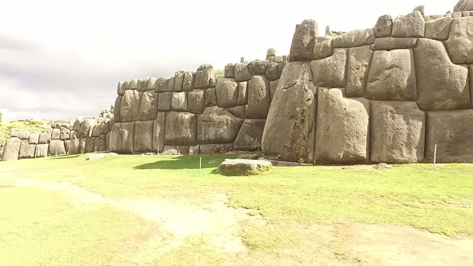
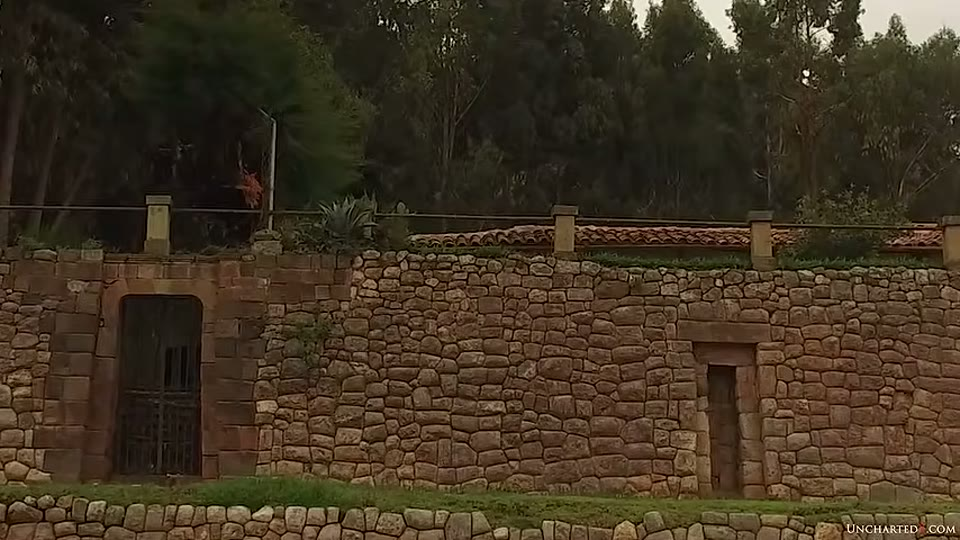
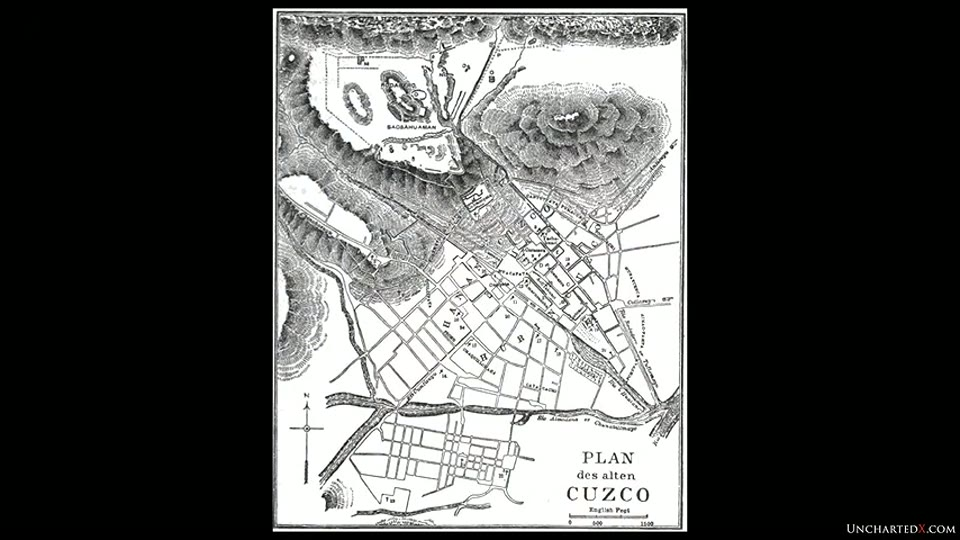
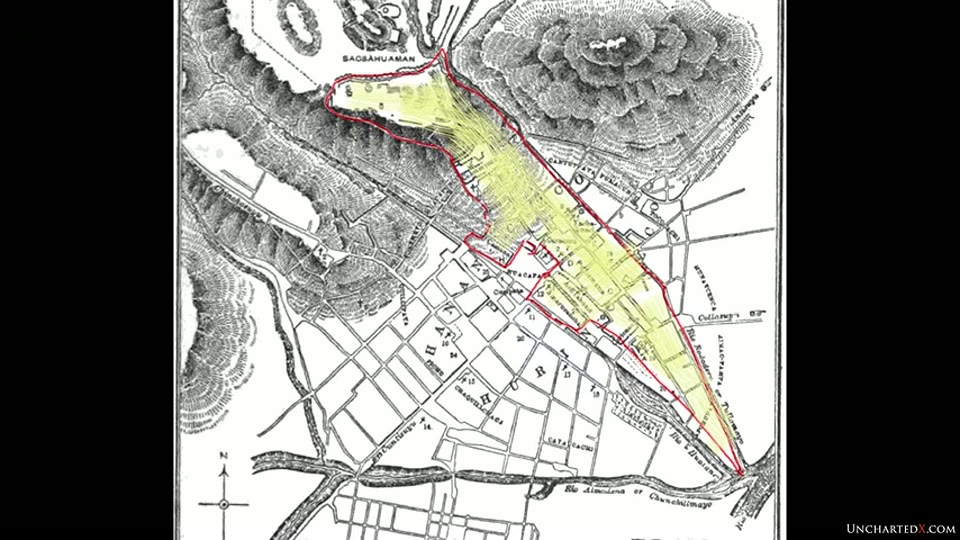

UnchartedX
The Megalithic Mystery of Sacsayhuaman - Part 1: Symbology, Location, History
Ben · 28 min · watch on YouTube · summarised 2026-09-30
Part one of two. This half is context: the site's relation to Cusco, what the Spanish did to it, and the symbology used as proof the Inca built it. The site walk is part two, which Ben says should follow within a couple of days and which is held here as a separate entry.
He splits them deliberately, and says why: "I know some of you will want to get right to the site review and skip all of the context."
The proposition is the same one that runs the sequel 01:29–01:58: that the Inca found Sacsayhuamán, repaired and renovated it, and respected and used it, rather than building it.
The site as he describes it at the top: polygonal limestone blocks, some "well over a hundred and fifty tons", fitted so closely "you can't fit a pin in between these stones", with the irregular joins making the wall effectively earthquake-proof.

The scale and fit of the polygonal blocks the video is about.
Cusco and Sacsayhuamán as one thing
Ben's view is that the two cannot be separated — "I suspect that they were all part of the same construction originally" 05:40–06:37. Cusco is a megalithic city with the Coricancha at its core, which he notes is a Catholic church today, "upholding that particular institution's tradition of hijacking sacred places around the world."
The evidence offered runs up the hillside between them, and it arrives in a clip of Brien Foerster at the palace of Manco Cápac, the first high Inca, built among megalithic ruins at what is now San Cristóbal church and square 06:37–08:33:
- the niche lintels are linear and a different material — basalt — while the Inca construction around them is local andesite
- the basalt, he says, comes from a quarry 50 km away
- original megalithic walls survive there, repaired by the Inca as part of the palace
- the square sits halfway between the Coricancha and Sacsayhuamán, and on his account the megalithic work once ran from the top all the way down into the city

That the niche lintels are a different, straighter stone from the walling around them.
The succession argument
Stated here in Ben's own voice rather than a guest's 08:33–09:53. There were 11 high Inca before the Spanish arrived, and the civilisation was "barely three hundred years old at that point." Each ruler built his own palace rather than using his predecessor's. And:
"It's only the first seven of the high Inca palaces that contain any megalithic work in their construction at all. The remainder of the palaces, up to the 11th high Inca, were all built with little tiny stones… there wasn't any megalithic components in them whatsoever."
The reading he puts on it is that there was no time to develop that capability and then lose it, and he reaches for Egypt for the comparison — the Old Kingdom "somehow just popping up out of the Stone Age" and building Giza, Dahshur and Saqqara before losing the ability.
The same argument, with different numbers, is in the Machu Picchu part two entry, where Foerster gives twelve rulers rather than eleven and puts the break at the eighth.
The second Foerster clip, and a date
At a megalithic wall in the back garden of a small hotel 11:17–13:51, Foerster reads the damage as catastrophic rather than structural, and attaches a date: the builders worked "more than 12,000 years ago", dated by a global catastrophe from space around 12,000 years ago. Two candidate mechanisms are named, both as other people's:
- a plasma ejection from the sun, which he attributes to Robert Schoch
- an emission from the centre of the galaxy, which he attributes to the physicist Paul LaViolette — on that account the galactic centre is a pulsar rather than a black hole, emitting lethal energy roughly every half precessional cycle of about 13,000 years, capable of disturbing small planets and diverting comets
What the Spanish did, and what is left
The destruction section 13:51–16:43. Ben's account: any Inca record of an earlier civilisation was destroyed by the Spanish, as happened also to the Aztec and Maya; the Coricancha's megalithic walls were plastered over; Cusco was mostly burnt during the conquest; and Sacsayhuamán was attacked, found too large to demolish, and then quarried for building stone.
Garcilaso de la Vega, writing in 1609:
"To save themselves the expense, effort and delay with which the Indians worked the stone, they pulled down all the smooth masonry in the walls. There is indeed not a house in the city that has not been made of this stone, or at least the houses built by the Spaniards."
What remained was then buried in soil, he says, to stop the locals drawing strength from it, and the site was lost until excavations resumed around 1939. His own estimate of what survives is "at best… around one third of the original stonework", and he reports that many experts put the original walls three to four metres higher than they now stand.
He also pre-empts an objection in his own words 16:15–16:43: that these cultures "weren't perfect", were "extremely murderous and even destructive themselves at times", and that most died of disease rather than "directly on the end of Spanish steel" — while holding that none of it excuses what was done.
The puma, and why he does not accept it
This is half the video and the reason to have it 17:38–26:00.
The claim being examined is not an alternative one. It is the standard proof, cited in literature and by guides, that the Inca built both sites: Cusco and Sacsayhuamán together form a giant puma seen from above, with Sacsayhuamán as the head and the city as the body.
How it is shown matters, and the video shows it twice. First a 19th-century engraved street plan, titled in German at its foot — PLAN des alten CUZCO — with Sacsayhuamán lettered at the top and a scale in English feet. Then the same plan with a red outline and a yellow wash drawn over it, running from the hilltop down a selected wedge of streets to a point at the lower right. The outline is an addition to the map, not part of it.


The puma shape offered as proof the Inca built Cusco and Sacsayhuamán.
Ben's objections, in the order he makes them:
The names do not carry it. In Quechua, Sacsayhuamán translates as "place where the hawk is satiated", and Cusco — the navel of the world — "directly translates to rock of the owl." Neither is a puma.
The same exercise works anywhere. He runs through the other shapes: on the Inca Roca wall in Cusco a snake for the underworld, and "just a few paces down, using some of the same blocks", a puma. The footage of that wall happens to contain the evidence for his point about prompting — a tourist signboard propped at the foot of it reading PUMA DE PIEDRA and SERPIENTE DE PIEDRA, stone puma and stone serpent. At Ñaupa Huaca a guide points out a puma face in the blue-stone idol and further shapes in the mountainside opposite. At Ollantaytambo a condor in the shape of a hillside, and a puma in the megaliths above the antechamber. Machu Picchu is said to be a caiman or a condor depending who is asked; Huayna Picchu has a puma face; there is a puma's paw in the wall at Sacsayhuamán.
And the step that makes this entry worth having. Of the puma his own guide points out in the Ollantaytambo megaliths, Ben says on camera: "I have real difficulty kind of seeing what he's talking about here myself." He then generalises it against both sides:
"This process of identifying these abstract shapes seems to apply equally to both natural formations as well as to the megalithic architecture… We as humans are designed to recognise patterns. We're very good at it… In the case of the Inca, I'm sure that a little prompting from the priesthood wouldn't hurt either — much like we get a little prompting from the orthodox historians and the modern-day guides that we'll find on these sites."
And the test he offers the viewer: "Ask yourself, do you really see a puma shape here — or would you really see a puma shape here if you weren't already shown that it was there?"
The omission. The puma outline leaves out the other megalithic sites in the hills around Cusco — he names Q'enqo and the Temple of the Moon among them — which he thinks were part of the same original complex. The passage runs over Google Earth with the archaeological park boundary drawn in green, on which Sacsayhuamán and Q'enqo are both labelled and the extent of the protected area is visible. "You have to ignore all of them in order to see this puma shape." And the outline uses the streets of Cusco selectively: "I bet that if you sat down with a piece of paper and a map you could probably draw many different shapes."
He does not know where the claim comes from. "I looked for this for a long time, but I don't actually know the source for this claim." His suggestion is that it may be relatively modern, since the shape is only visible from above — "and I don't think the Inca were known to be able to fly."
He closes the section by marking what he is not saying: that he is not dismissing Inca philosophy or culture, which he calls "remarkable on many levels", and not saying the shapes meant nothing to them, "clearly they did."
What the Inca said, and what the mainstream says
Two paragraphs at the end that are unusually careful 26:00–26:57.
On the Inca: "the Inca themselves don't claim to have built Sacsayhuamán" — though Ben adds immediately that "there's not really any consistent accounts of what they did say." Two versions are given: indigenous wisdom keepers saying the site was there before they arrived, and the story that giants built it and it appeared overnight as if by magic.
On the accepted account, stated fairly: even orthodox historians and archaeologists do not generally credit the Inca with founding these sites. Both Sacsayhuamán and Cusco are traced back to the Killke culture, which Ben says emerged three or four hundred years before the Inca and did some of the initial building — with the Inca then responsible for the majority of what stands.
His own summary of where that leaves it: no direct evidence that the Inca were capable of megalithic work, no proof they built these sites, and a good deal that suggests they found, rebuilt and adopted them.
What you can check yourself
- The Quechua meanings of Sacsayhuamán and Cusco, against the puma claim.
- Whether the basalt lintels at San Cristóbal are a different stone from the andesite around them — a difference of colour and texture visible in a photograph.
- Which of the eleven Inca palaces contain megalithic work, which is a claim about standing buildings in Cusco.
- The Garcilaso passage, published in 1609.
- The Killke attribution, which is the mainstream position and is published.
- The date excavation resumed, given as around 1939.
- Whether you can see the puma. Ben's own test, and it costs nothing.
- Whether the same shape-finding works on natural hillsides, which is the comparison he builds the argument on and which anyone can repeat.
What the video does not settle
- Nothing here is dated. No physical dating evidence for the megalithic work appears. The argument is from materials, layering, the succession of palaces, and what the Inca are reported to have said.
- The puma section establishes that the claim is weak, not that the Inca did not build the site. Ben says so himself — the shapes are "certainly not proof that the Inca first built this place", which leaves the question open rather than answering it.
- The 150-ton figure is stated without a source, and nothing in the video is weighed or measured.
- "About one third of the original stonework" is Ben's own estimate and he says so.
- "Many experts agree the walls were three to four metres higher" — no expert, survey or publication is named.
- The 50-kilometre basalt quarry is asserted inside a clip. No quarry is named or located, and no analysis linking the lintels to it is offered. The same figure is given in
31SFLloQ-hU. - The succession figures do not match across this channel's own videos. Here there are eleven high Inca, the civilisation is "barely three hundred years old", and the break falls after the seventh palace. In
31SFLloQ-hUthe same argument is made with twelve rulers and the break at the eighth, and other entries give the Inca around 150 years at their peak. - The catastrophe date and its mechanisms are asserted in a clip with no sources. Schoch's solar plasma ejection and LaViolette's galactic pulsar are attributed by name only; no paper, book or date is given for either, and no evidence from this site is tied to them.
- The Killke dating has no citation beyond "three or four hundred years before the Inca".
- The puma's paw at Sacsayhuamán is mentioned and not examined, in a section otherwise devoted to examining exactly that kind of claim.
- The puma outline's provenance is not on the map it is drawn on. The base plan is a 19th-century engraving; the red outline and yellow wash are an overlay, and the video does not say who added them or when — which is the same question Ben raises about the claim itself.
- The basalt lintels are visible but the material is not. The niches at San Cristóbal do carry straight lintels that read as a different, greyer stone from the reddish walling around them. That they are basalt, and that the basalt came from 50 km away, is spoken; no analysis, quarry or sample appears.
- The Inca accounts are inconsistent and the video says so, offering two incompatible versions without preferring either.
- The source of the puma claim was looked for and not found, which Ben states plainly; its age is offered as a suggestion.
Names
The 2019 caption track is the unpunctuated kind. Reconstructions flagged:
| written here | as the captions give it |
|---|---|
| Sacsayhuamán | "saqsaywaman", "sex-ay who among", "sexy woman", "sacsayhuamán" |
| Cusco, Coricancha | "cusco", "core akansha", "qurikancha" |
| Ollantaytambo | "Atlanta Tambo" |
| Ñaupa Huaca | "napa walker", "NAPA Hakka" |
| Q'enqo | "Kenko" |
| Manco Cápac | "Mong Kok a pax", "maker cAPX", "Mong Kok Epoque" |
| Killke | "Kilkee" |
| Jesús Gamarra | "hey-zeus Kamara" |
| Brien Foerster | "Brian Forester" |
| Paul LaViolette | "paul de la Violette" |
| chakana | "Chicana" |
| Huayna Picchu | "Winer Picchu" |
One name was not recovered. Listing the megalithic sites the puma outline omits, Ben names Q'enqo and the Temple of the Moon and then a third that the captions render as "own X". It has not been identified and is left out of the body rather than guessed at.
The guide in the Ñaupa Huaca and Ollantaytambo clips is the same one as in the Machu Picchu entries, given in the captions here as "relly oh" and "rehalia", and rendered as "Roy Elio" in the earlier entries. The spelling remains unverified.